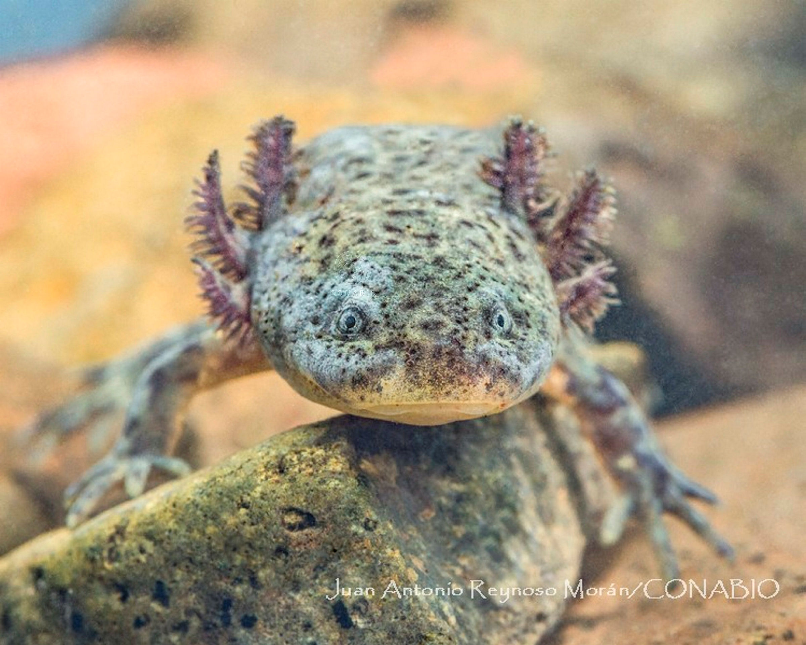
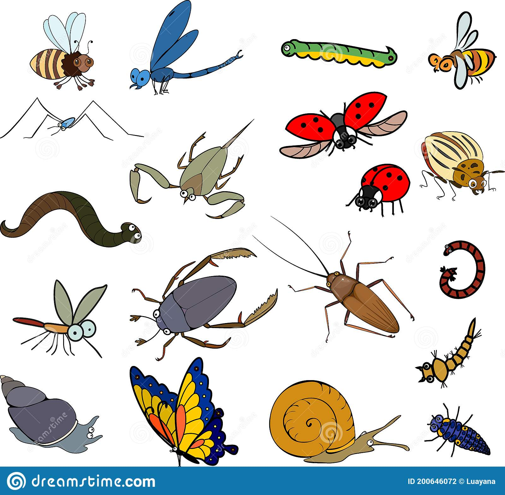

Este tipo de ajolote no suele superar los 12 cm de longitud. El dorso y los lados del cuerpo son negros violáceos, mientras que el vientre es purpura, pero además presenta unas franjas claras que van desde la cabeza hasta la cola. Habita a grandes alturas sobre el nivel del mar, específicamente en pequeños ríos ubicados en bosques de pino o encino, aunque también están en aguas de pastizales. Las formas adultas pueden ser acuáticas o terrestres. La especie se encuentra en peligro de extinción.
| Ajolote arroyero | Habitat | Caracteristicas | Alimentacion |
|---|---|---|---|
|  | Ambystoma altamirani crece hasta unos 115 mm de largo. Su cola es delgada, tiene una aleta baja en la parte superior y una aleta aún más pequeña en la parte inferior de la cola. La cola es de aproximadamente 50 mm. Las extremidades también son delgadas. La superficie dorsal y los lados son de un color negro violáceo, mientras que el vientre es de color púrpura-lavanda. La barbilla y las superficies inferiores de las extremidades están oscurecidas con un ligero tono lavanda. Los bordes de los labios, las puntas de los dedos y la aleta en la parte inferior de la cola son de color crema. |  |